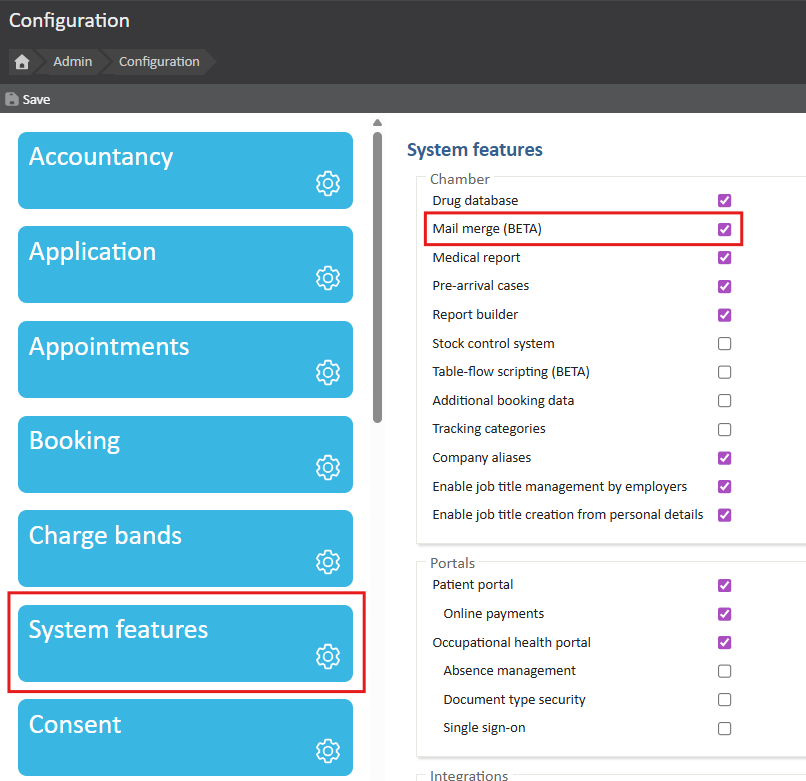
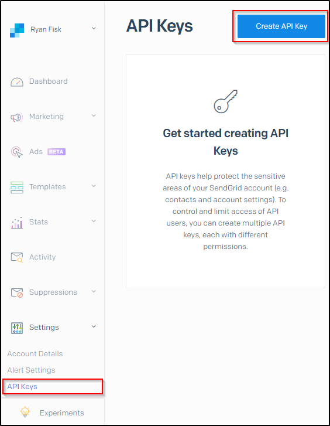
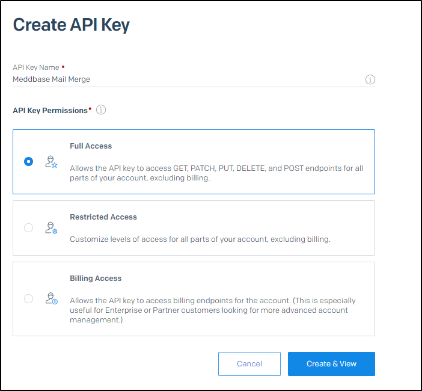
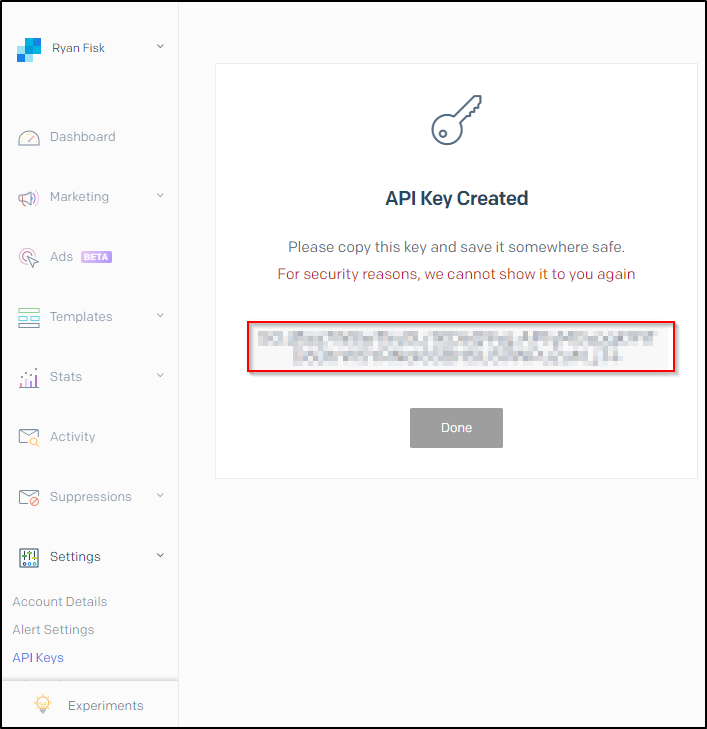
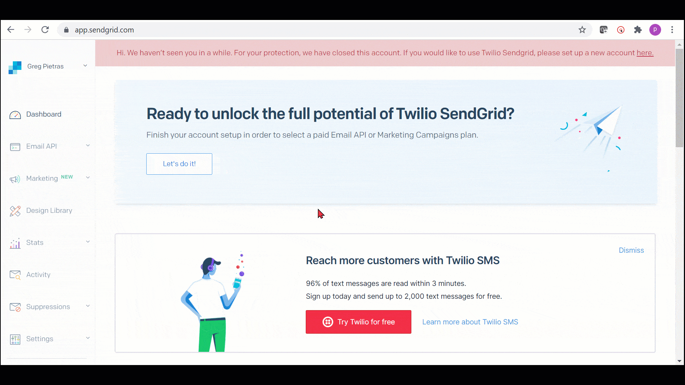
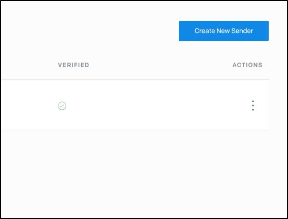
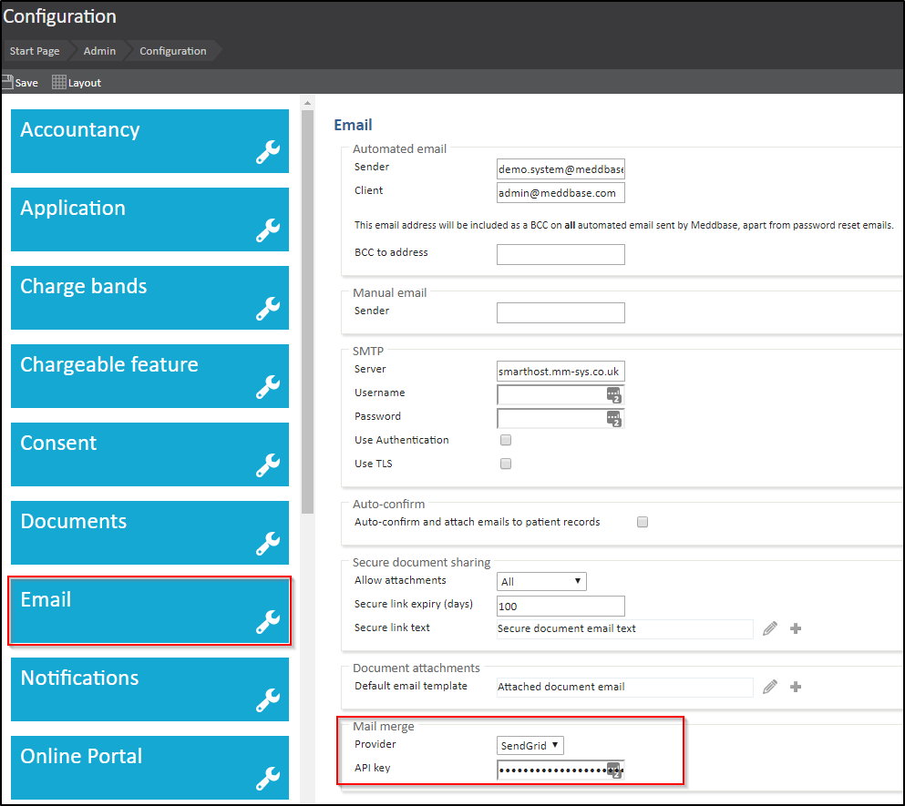

Mail Merge is a system feature of Meddbase allowing mass SMS and(or) e-mail to a group of Patients, Medical people or Companies.
This can be used for marketing, invoicing, or just updating your contacts.
This article will walk you through enabling the Mail merge function in your Chamber, setting up your SendGrid account, and entering your API key to link Meddbase and SendGrid.
Because the Mail merge function is a system feature, it must be enabled before you can begin to configure it. To enable Mail Merge:
1. From the Start Page navigate to Admin.
2. Click the Configuration tile.
3. From the options list on the left side, click System features.
4. Tick the Mail Merge box.
5. Click Yes on the pop-up informing you of automatic charges.
6. Click Save to apply your setting.

Once you have enabled Mail merge, you will need to sign up for a SendGrid account. You can do this here: https://signup.sendgrid.com/
SendGrid is a service is integrated with Meddbase to allow the bulk sending of emails. After you log into your SendGrid account, you will need to generate an API key to link SendGrid with Meddbase.
You can generate an API key by clicking on 'Settings' on the menu on left, followed by API Keys as pictured below.

You will then need to enter in a name for your API key, anything will do. Ensure that 'Full Access' is selected then click Create & View.

If you have followed these steps, you should now be able to see your API key, it is important to store this key somewhere safe as it is only shown once.

After storing your API key in a safe place to use later, it's time to add a Single Sender Verification. This will be the email address you want to use as the sender the replier.

After completing this, an email verification will be sent to the email you entered. For this reason, you need to be able to access the email send to the sender so you can verify your account. Once you click on the link received in the email your account will be shown as 'Verified'.

You can now enter your API key into the Email configuration page within Meddbase. You can find this by navigating to: Start Page > Admin > Configuration > Email
Don't forget to Save the changes to settings before leaving this page.

The feature is now enabled, set up and ready for use. Click here for a detailed article on using the Mail Merge feature.